São Paulo
Opções de estadia - Onde ficar? 🤔
Turismo
Boas opções para conhecer SP :)
 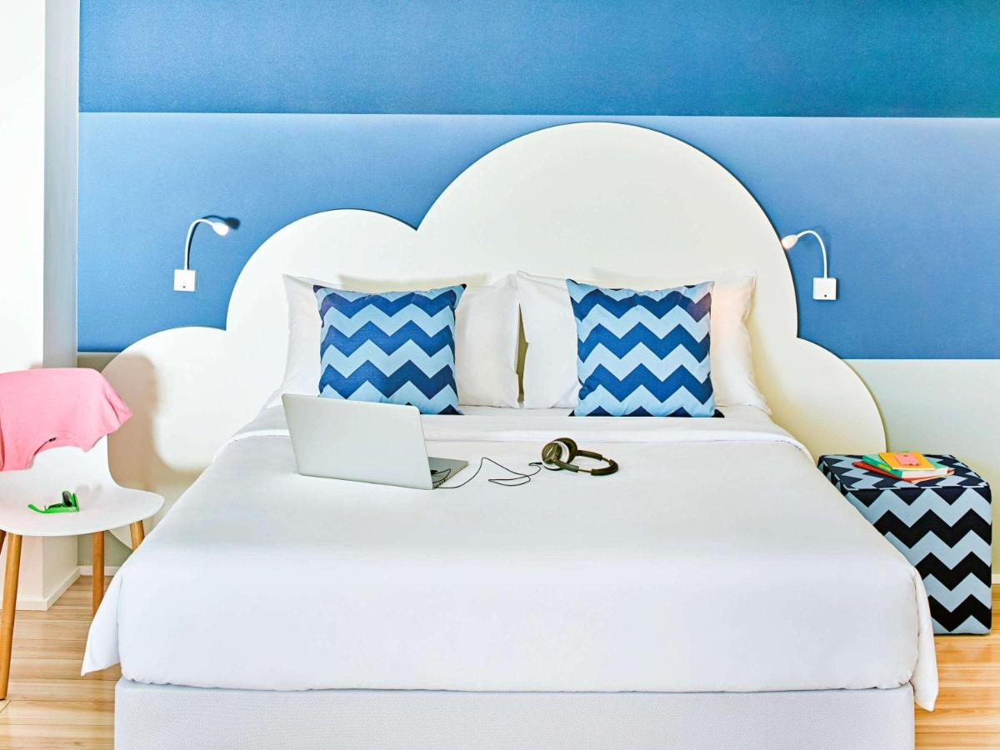
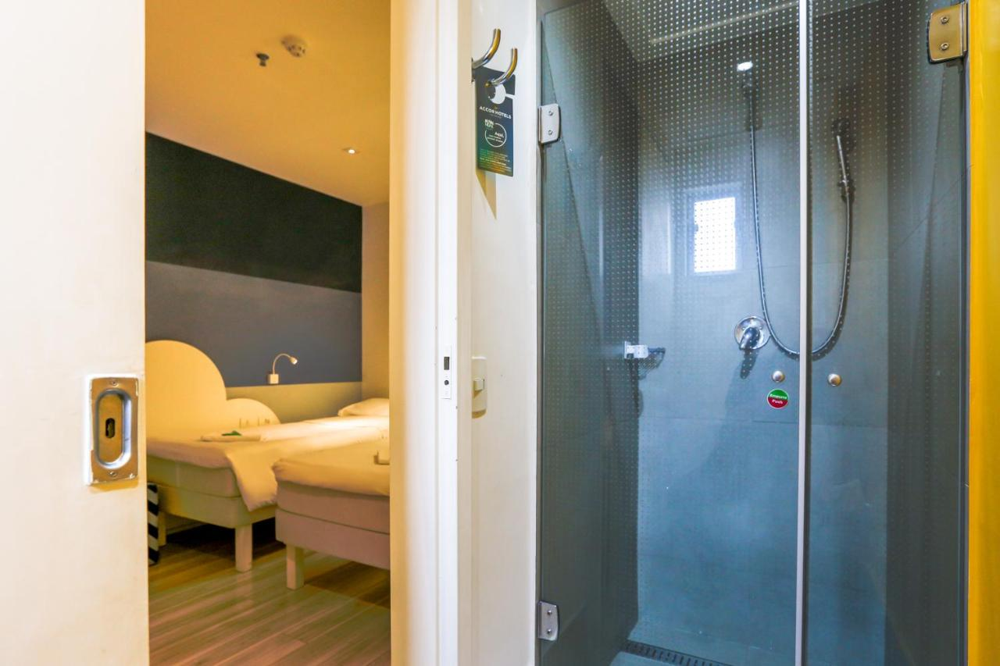
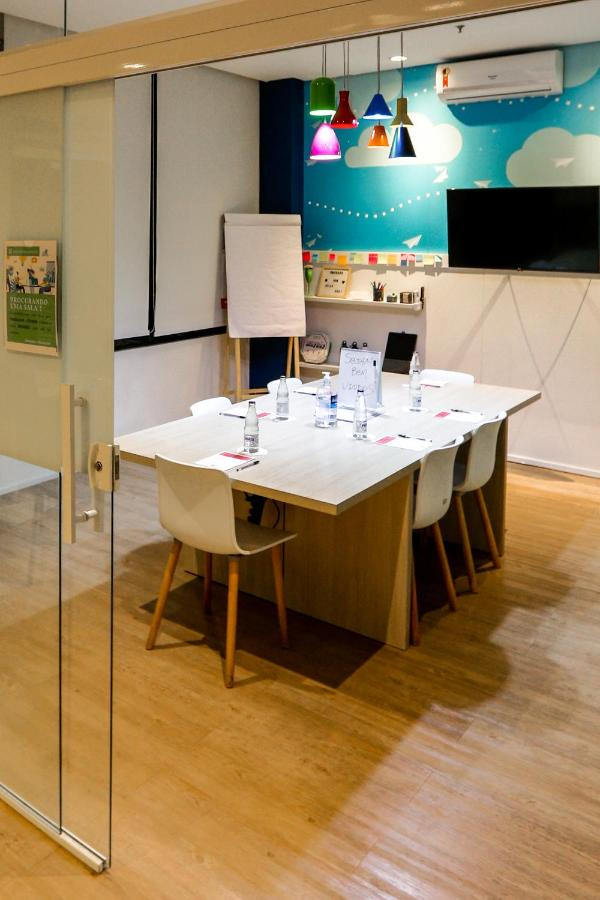
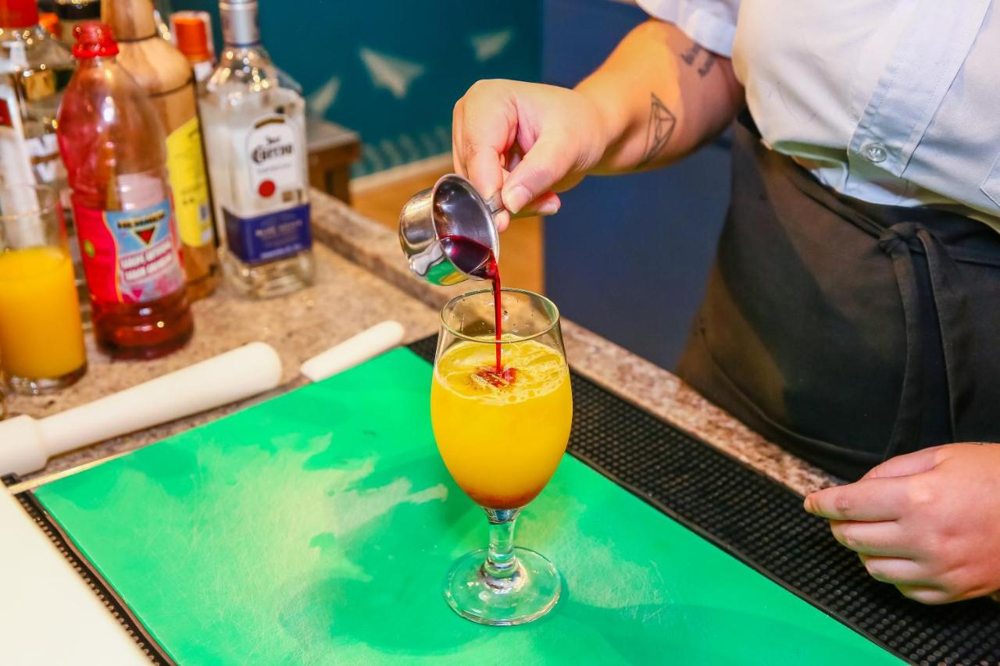
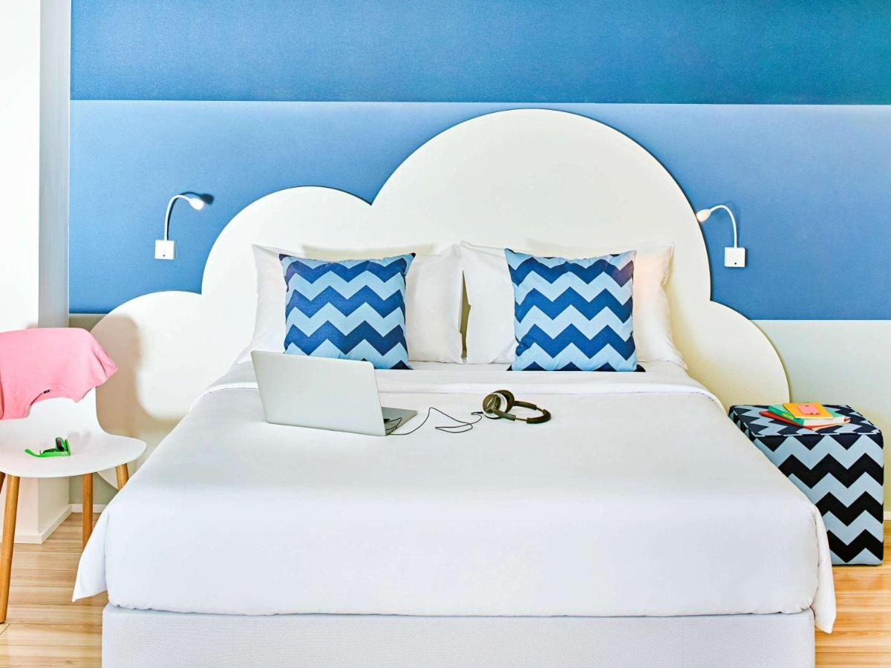
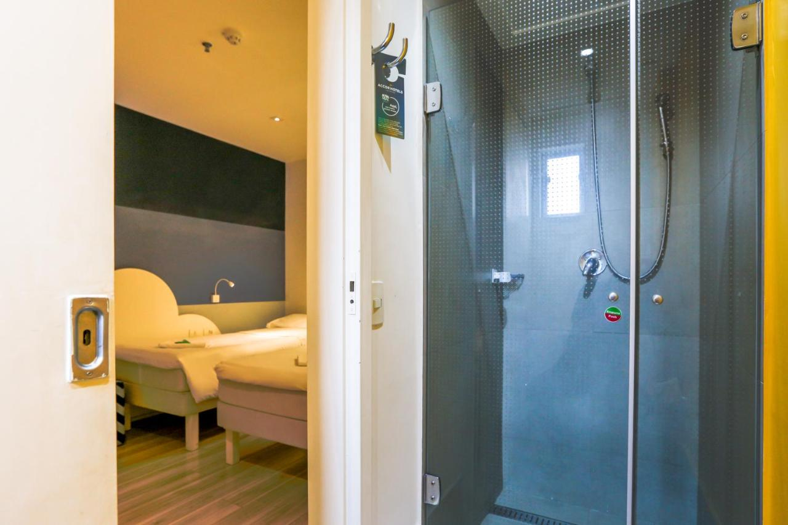
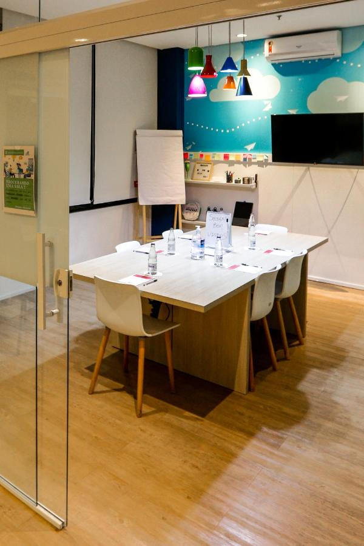
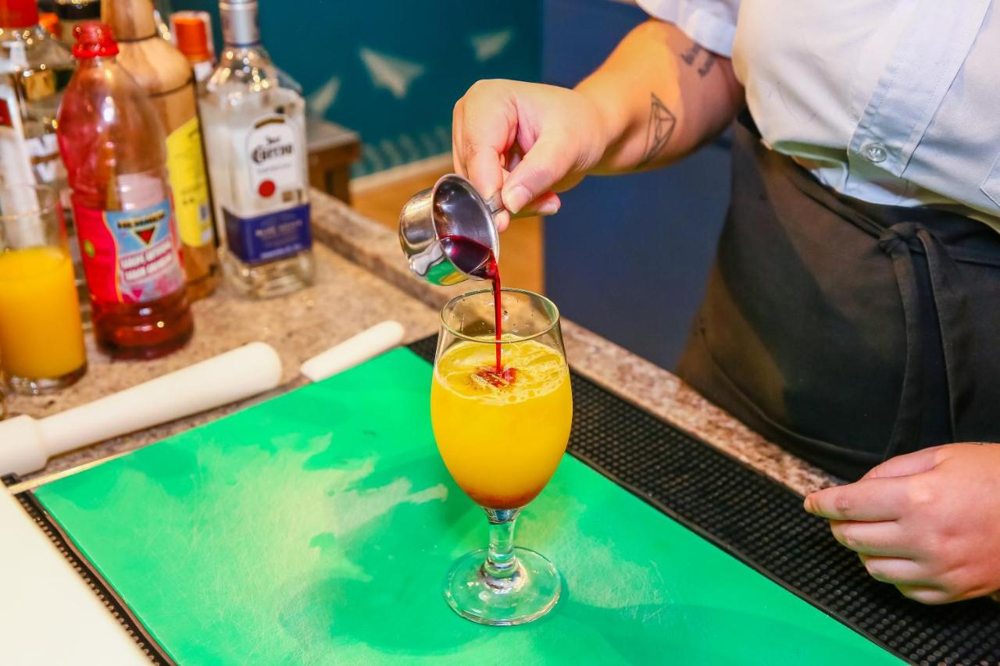
ibis Styles São Paulo Anhembi
Av. Cruzeiro do Sul, 1709 - Santana, São Paulo - SP, 02031-000
Avaliação dos usuários:
Avaliações
-
“Café da manhã excepcional, superou todas as expectativas; ao lado do metrô, relativamente próximo de lugares turísticos e centros de eventos; fora os quartos e atendimentos nota 10!”
- Carvalho
-
“Tem uma ótima localização, literalmente do lado da estação Portuguesa-Tietê. Limpo, atendimento muito bom, e café da manhã caprichado.”
- Mayra
-
“Camas confortáveis e decoração temática muito legal”
- Marcus
Comfort Ibirapuera
Av. Sabiá, 825 - Indianópolis, São Paulo - SP, 04515-001
Avaliação dos usuários:
Avaliações
-
“Localização muito boa em frente a estação de metrô Moema, 10 minutos do shopping ibirapuera andando, perto do mercado Carrefour express”
- Catherine
-
“A localização é maravilhosa. Hotel mto confortável.”
- Renata
-
“Nós amamos demais a localização (na frente do metro literalmente) e conforto do hotel, se tornando um excelente custo-beneficio.”
- Veruska

Blue Tree Premium Morumbi
Av. Roque Petroni Júnior, 1000 - Vila Gertrudes, São Paulo - SP, 04707-000
Avaliação dos usuários:
Avaliações
-
“Café da manhã excelente com muita variedade, ótimo atendimento dos funcionários, quarto de tamanho bom com cama confortável e vista incrível.”
- Rachel
-
“Atenciosos, localização ímpar, café da manhã e buffet do jantar excelentes.”
- Elza
-
“O espaço do quarto, o café da manhã com muitas variedades, a localização do hotel, a equipe de atendimento. O estacionamento, embora não esteja incluído na diária, é junto ao hotel.”
- Sizenando
Trabalho
Opções para quem quer focar no(s) trabalho/negócios
Mercure São Paulo Pamplona Hotel
R. Pamplona, 1315 - Jardim Paulista, São Paulo - SP, 01405-002
Avaliação dos usuários:
Avaliações
-
"Tudo perfeito, desde a recepção, limpeza, café da manhã e estacionamento. recomento a qualquer um em passeio com família ou a trabalho. Não tenho o que me queixar, apenas recomendar. localização excelente."
- Leonardo
-
"O hotel está muito bem localizado em Pinheiros. Um dos melhores restaurantes de São Pulo está no mesmo quarteirão. O tamanho do apartamento também é muito bom. Seria desejavel mais atenção aos detalhes."
- Robson
-
"Quarto espaçoso, cama confortável, bom espaço para acomodar o pet, café da manhã bom, funcionários muito bem receptivos, ducha ótima. A localização é ótima tem tudo que precisar a poucos metros de distância ou caminhando alguns minutinhos. Fácil para se deslocar p qualquer ponto da cidade."
- Clovis
 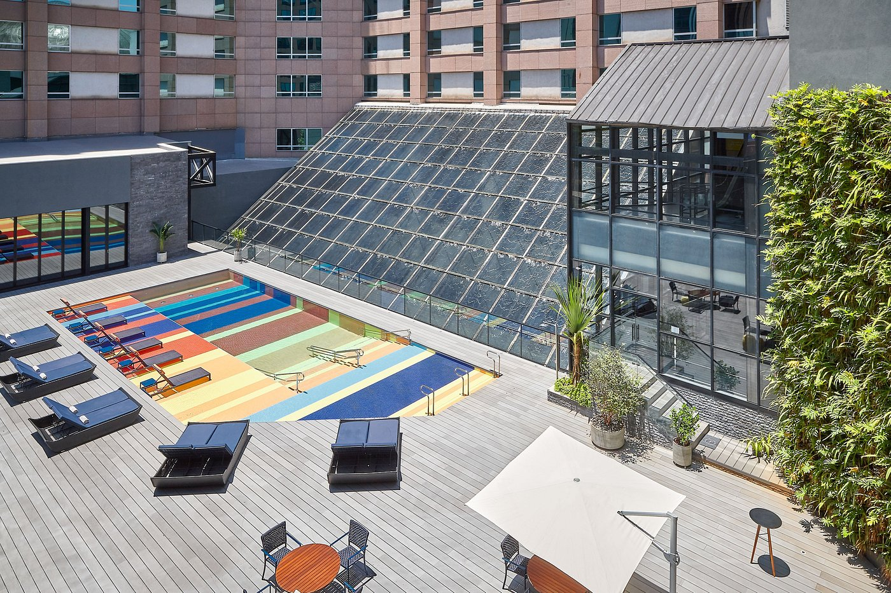
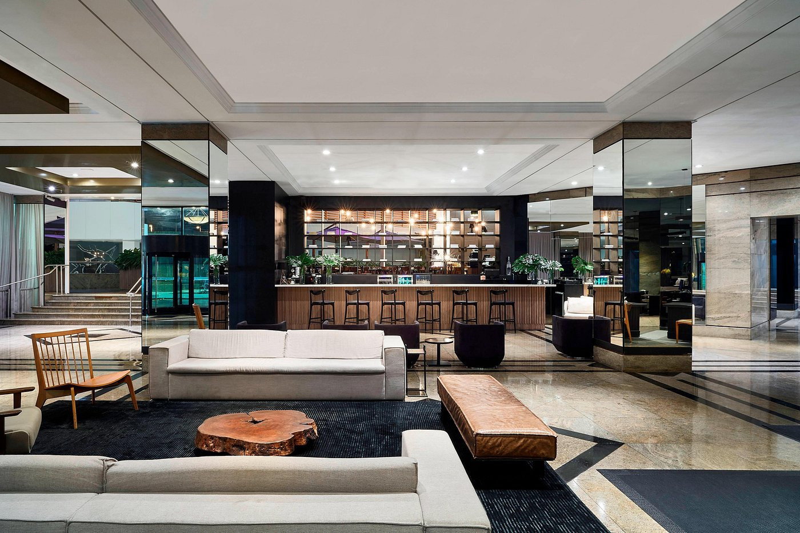
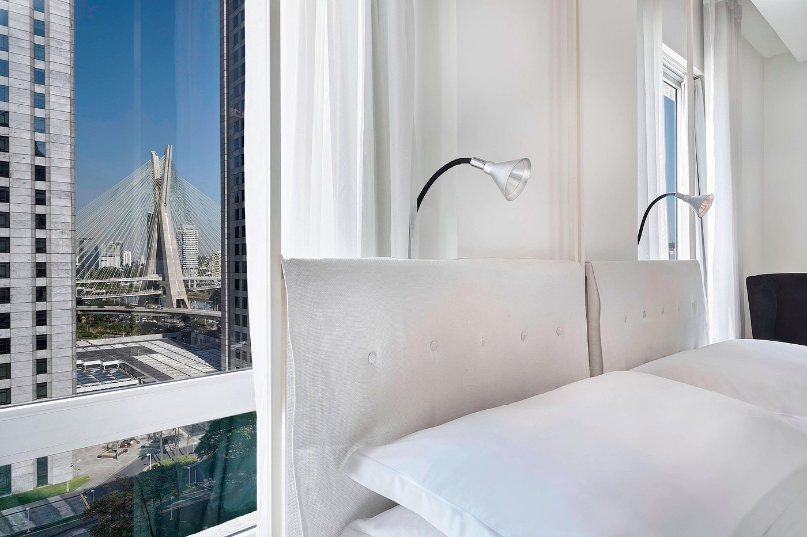
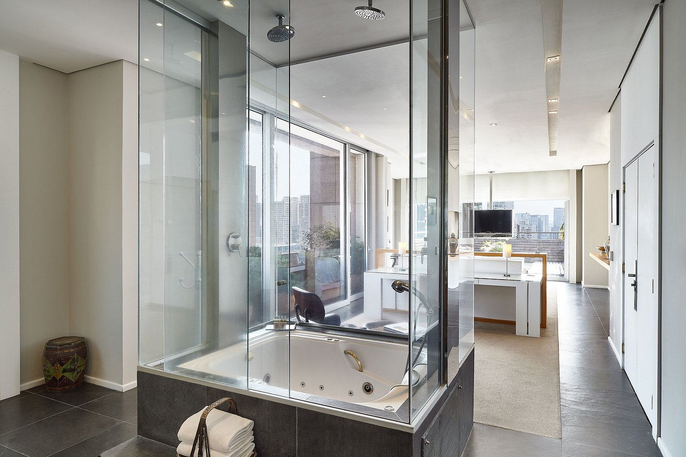
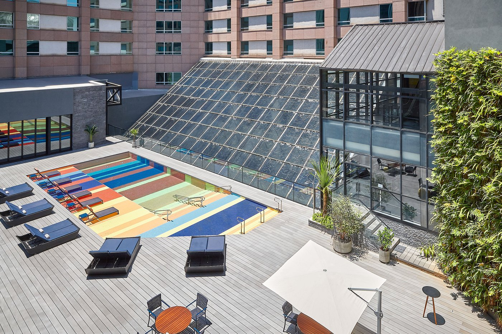
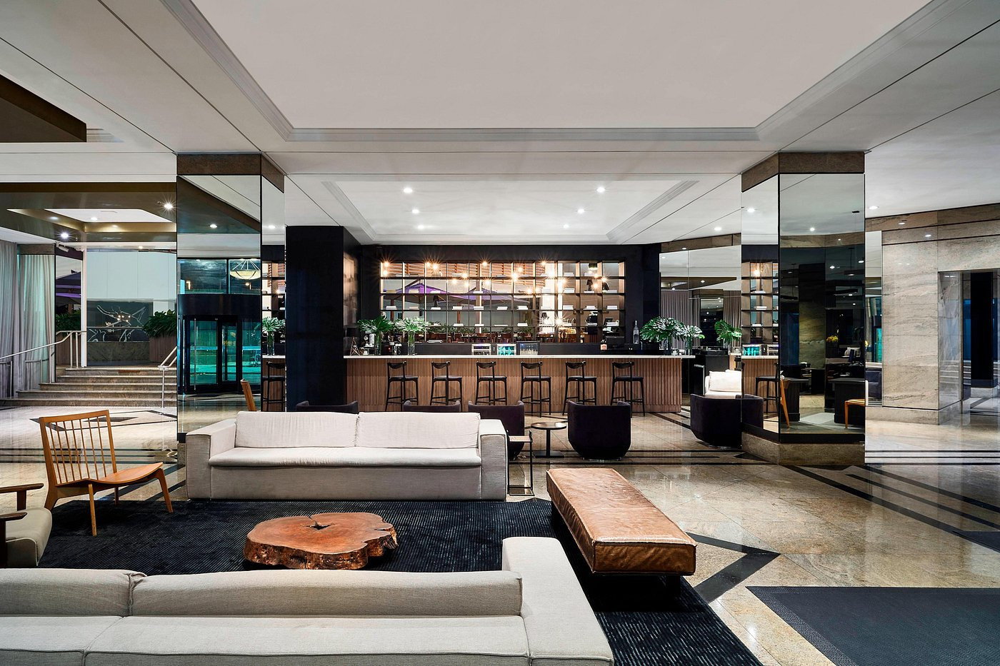
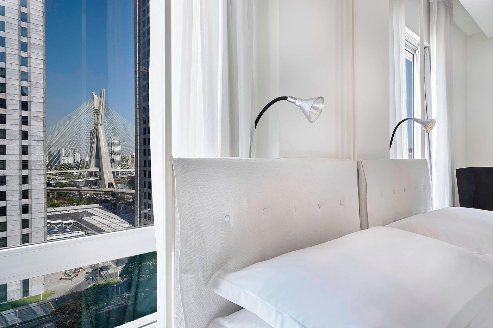
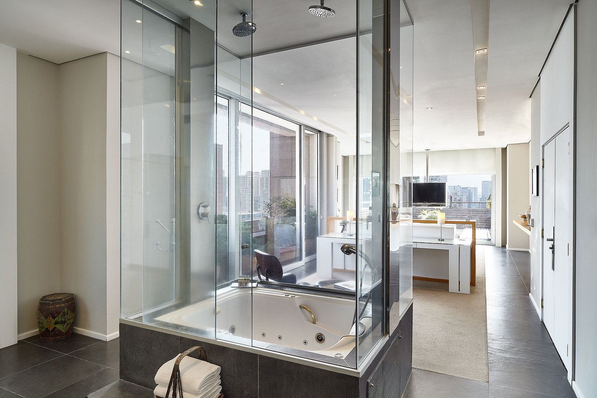
Sheraton São Paulo WTC Hotel
Av. das Nações Unidas, 12559 - Brooklin Novo, São Paulo - SP, 04578-903
Avaliação dos usuários:
Avaliações
-
"Hotel excelente em São Paulo. Acomodações limpas, bem conservadas e aconchegantes. Fui acomodado em um quarto Executivo, com uma vista sensacional para Ponte Estaiada."
- Daniel
-
"Um hotel que possui tudo dentro dele em termos de evento, culinária e até mesmo o shopping de decoração e arquitetura. Experiência única fica e ter a vista de São Paulo, quartos amplos, café da manhã excelente e equipe muito cordial como a rede já está acostumada!"
- Lidia
-
"O serviço e a atenção é algo que não encontrei em muitos hotéis do mundo e viajo muito a trabalho. O tratamento de todos os funcionários do Sheraton foi incrível, qualquer preocupação e solicitação eles fizeram sem hesitação. Volto sem dúvidas!"
- Bernardo
Bourbon Convention Ibirapuera
Av. Ibirapuera, 2927 - Ibirapuera, São Paulo - SP, 04029-200
Avaliação dos usuários:
Avaliações
-
"Um excelente recito pra se descansar, comer e curtir. Gostamos muito da localização, uma vez que amamos estar em Moema."
- Ygor
-
"O quarto que eu fiquei tinha alguma infiltração, que causava um cheiro forte de mofo e já na minha última noite no hotel, identifiquei que o mofo estava no quadro e na cortina. Isso é deplorável, pra um hotel caro em pleno coração de São Paulo. Isso atacou a minha alergia, me causou dores de cabeça e dor de ouvido, péssima experiência. O café da manhã é maravilhoso, e a atenção dos staff também."
- Izabelle
-
"Organizado, limpo, ótimas instalações, bom atendimento, café da manhã maravilhoso, aconchegante, confortável, todos bem atenciosos, comprometidos... Uma experiência completa e perfeita. Gratidão a todos!"
- Ana
Renaissance São Paulo Hotel
Alameda Santos, 2233 - Jardim Paulista, São Paulo - SP, 01419-002
Avaliação dos usuários:
Avaliações
-
"Fomos tomar café da manhã no hotel. A experiência foi excelente, muita variedade e a frutas pareciam selecionadas de tão boas. O atendimento feito pelo garçom Renato foi muito atencioso. Pela ambientação e pela experiência o preço foi ok, super recomendo!"
- Dereck
-
"Staff atencioso, prestativo... Bar e restaurante do lobby muito bons. Ótima localização. Café da manhã muito bom. Pontos negativos: quarto um pouco apertado e banho. O banho precisa melhorar. A ducha nos fazia correr atrás da água. Ou: ducha incompatível com o padrão pretendido pelo hotel e esperado pelo hóspede. Banho fraco mesmo."
- Lapin
-
"Não poderríamos ter feito melhor escolha para celebrar nossas Bodas. 04 dias sendo acolhidos com extremo profissionalismo e empatia genuína. Até breve!"
- Richard